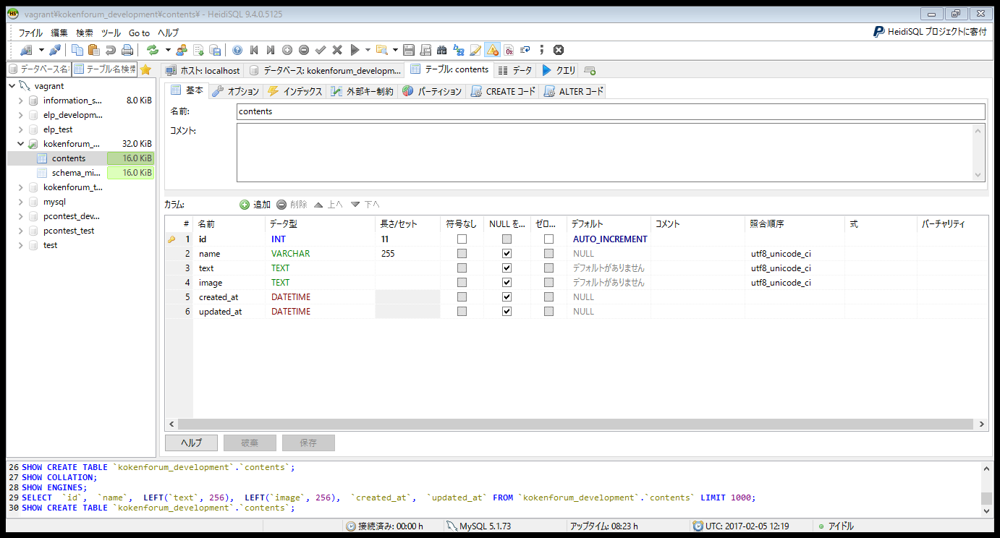
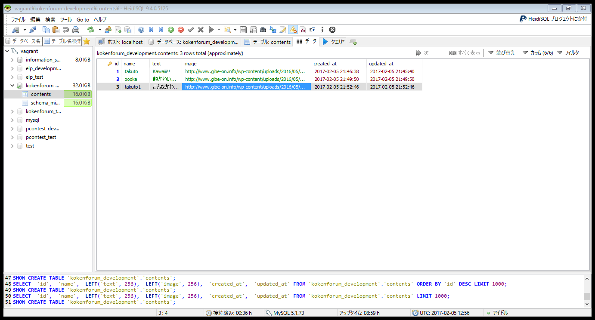

第四回 RubyOnRails 講習
みなさんは前回の講習で ルーティング、コントローラー、ビュー の流れでコードを書いていき簡単な Rails プログラムを書きました。
今回は本格的に掲示板WEBサービスを作っていきましょう。
まずはゼロから作るために前回の講習でつくった /vagrant/projects 内の kokenforum プロジェクトを消しましょう。
$ cd /vagrant/projects
$ rm -rf kokenforum
続いて MySQL の kokenforum_development, kokenforum_test データベースを削除(drop)してください。 HeidiSQLでデータベースを右クリック ドロップ で削除できます。
そしてもう一回 Rails のプロジェクトを作りましょう。
$ rails new kokenforum -d mysql (プロジェクトの作成は gem をインストールするのでインターネット環境で行ってください。)
さぁ Rails でWEBサービスを作っていくときはどうするのでしたっけ？
Routing → Controller → View
の順番で作っていくんでしたね。
慣れていくとWEBサービスの全体の Model(データベースのテーブル) から設計してそれを軸に上の実装をしていくのがいいのですが一番理解してほしいのが上の流れなので今回はデータを格納する必要が出てきたら逐一 Model を実装していくスタイルで行きます。
Gemfile の設定をする
一番初めにCentOSにインストールされている MySQL のバージョンと gem mysql2 のバージョンを合わせましょう
Gemfile
gem 'mysql2', '0.3.18'
Gemfile
#これに関してはどこに記述してもかまいません。 ただし自分で追加したことが一目でわかるような場所に記述しましょう。
gem 'pry-rails' # デバッグ用の便利なgem
gem 'sprockets' # javascriptのプリプロセッサgem プリプロセッサプログラムとはプログラム実行前に呼び出されるプログラムのこと
Gemfile.lockを削除した後、以下のコマンドでプロジェクトにgemをinstallしてください。
# kokenforum
$ bundle install
これで一番初めの設定は終わりました。
投稿内容一覧表示画面(TOP画面)を実装する(前準備)
掲示板といえばTOP画面がありそこに新しい投稿順に表示されているTOP画面は欠かせませんね。 まずはそこから実装していきましょう。
投稿内容は当たり前ですがデータなのでModelを定義しなければなりません。 その前にデータベースを作りましょう
$ cd /vagrant/projects/kokenforum
$ rake db:create # kokenforum/database.yml の設定に従ってデータベースを作成する
続いて投稿内容を保存するModel contents を作りましょう。
kokenforum
$ rails g model content
Modelクラスを生成したら次は Migration ファイルの実行です。 まず Migrationファイルを記述しましょう。
kokenforum/db/migrate/20170205120939_create_contents (ファイル名は時刻によって違います)
class CreateContents < ActiveRecord::Migration
def change
create_table :contents do |t|
t.string :name # ユーザー名の保存
t.text :text # 投稿内容の文字列を保存
t.text :image # 画像の場所のURIを保存
t.timestamps # 作成時刻、編集時刻のカラム追加
end
end
end
そして Migration の実行です。 これでデータベースに contentテーブルが作成されます。
$ rake db:migrate
この状態で HeidiSQLを開いてください。 以下のようなテーブル構成になっていると思います。
間違えてマイグレーションを実行してしまったら rake db:rollback でしたね
TOP画面を実装するのでテーブルに以下のように何か適当なダミーデータを入れておいてください。
画像参考元 リンク
最後にRouting Controller View に入る前にViewがどのように表示されるかを理解していきましょう。
以下のファイルを開いて下さい。
kokenforum/app/views/layouts/application.html.erb (erbについては後程説明します。 HTMLファイルと考えてくれてかまいません。)
<!DOCTYPE html>
<html>
<head>
Kokenforum
<%= stylesheet_link_tag 'application', media: 'all', 'data-turbolinks-track' => true %>
<%= javascript_include_tag 'application', 'data-turbolinks-track' => true %>
<%= csrf_meta_tags %>
</head>
<body>
<%= yield %>
</body>
</html>
この <%= yield %> という部分に Viewのhtmlを埋め込んでいきます。
(流れがよく見えないとは思いますが後でわかるので今はこういうファイルがあるんだということだけ覚えてください。)
それ以外の部分はすべてのページの共通部分ということになります。 なので全ページ共通であるheaderやfooterやmetaタグでの読み込み、CSS, jsファイルの読み込み等は原則 application.html.erb に書いていきます。
kokenforum/app/models/content.rb の中を見てみてください。 Contentクラスが ActiveRecord::Base を継承しているのが確認できます。
投稿内容一覧表示画面(TOP画面)を実装する(Routing → Controller → View の順で実装していく)
Routingの実装行きましょう
kokenforum/config/routes.rb
Rails.application.routes.draw do
get 'top' => 'top#index'
end
次は Controller の実装です。TOP画面を実装するのでそれを担う Controller を作りましょう。
$ rails g controller top
kokenforum/app/controllers/top_controller.rb
class TopController < ApplicationController
def show
# contentsテーブルからすべてのデータを取ってくる。 @がつくと Viewでも変数を使えるようになる。
@contents = Content.all # ハッシュデータ形式
end
end
最後に View を実装します。 View は rails g のようなコマンドは必要ありません。 ディレクトリに手作業で作ります。ただしcontrollerに対応するディレクトリ内に作り、名前もアクション名(コントローラーのメソッド名)に対応させなければなりません。
以下の名前でファイルを作ってください。(showメソッドを呼び出しているので名前はshow.html.erb, またerbを付け加えると HTMLにデータを埋め込むことができる)
kokenforum/app/views/top/index.html.erb
<% @contents.each do |content| %> <!-- <% %> はRubyのコードを入れるためのタグ -->
<%=content[:name]%> <!-- <%= %> は Rubyのコードにより生成した文字列を埋め込むためのタグ -->
<%=content[:text]%>
 <% end %>
<% end %>
これで機能の実装が完了しました。 rails sでサーバーを立てブラウザで localhost:3000/top で開いてみましょう。
$ rails s -b 0.0.0.0
また-b 0.0.0.0は前回付け加えてるのを忘れていました。
-b とはbindingの略で 指定のIPアドレスでLAN内アドレスを固定するという意味です。
仮想環境とHostのマシン(みなさんのPCです)は独立しているときと同じ挙動をするのでつけないとアクセスできません。
0.0.0.0はデフォルトルート(気になる方は調べてみてください)と言われるものでこの場合はすべてのIPアドレスからの接続を受け付けているという意味です。
application.html.erbにViewが埋め込まれるので表示されるhtmlは以下のようになります。
<!DOCTYPE html>
<html>
<head>
Kokenforum
<%= stylesheet_link_tag 'application', media: 'all', 'data-turbolinks-track' => true %>
<%= javascript_include_tag 'application', 'data-turbolinks-track' => true %>
<%= csrf_meta_tags %>
</head>
<body>
takuto
Kawaiii!!
 </body>
</html>
</body>
</html>
表示される画面は次のようになっていると思います。

TOP画面に投稿内容が表示されるだけというのも悲しいので
headerをつくる
最新の投稿の三件の表示
footerの表示
これくらい着飾っていたらかなり見栄えがいいですね。 ただ header, footer は全ページ共通のものとして扱うことができます。
application.html.erb
全ページ共通のものはこれに書いていくといいんでしたよね。
app/views/layouts/application.html.erb
投稿一覧へ行く前に リダイレクト設定をしましょう。
次は投稿一覧表示画面を作りましょう。
投稿一覧画面を実装する
さあ新しく新規投稿画面を作りましょう
新しい機能を作るのはどうやるんでしたっけ？
Routing → Controller → View
この流れに沿って開発していくんでしたね
投稿画面の Routing 設定
contentsを全て見せますから contentsコントローラーのindexアクションとでもしましょう
kokenforum/config/routes.rb
Rails.application.routes.draw do
root to: 'top#index'
↓ 追加部分
get 'contents' => 'contents#index' # 投稿内容すべてを表示するアクション contentsコントローラーのindexアクションを呼び出す。
end
contents controllerはまだ作っていないので作りましょう
$ rails g controller contents
これで controller.rb と Viewファイルをいれるディレクトリが作られました。 (それ以外にも作られていますが後で説明します。 またログを見れば何が作られているかがわかります。)
kokenforum/app/controllers/contents_controller.rb
class ContentsController < ApplicationController
def index
@contents = Content.all
end
end
kokenforum/app/views/contents/index.html.erb
<% @contents.each do |content| %>
<%=content[:name]%>
<%=content[:text]%>
<% end %>
投稿一覧画面が作り終わりました。
新規投稿画面をつくる
さあ新しく新規投稿画面を作りましょう
新しい機能を作るのはどうやるんでしたっけ？
Routing → Controller → View
この流れに沿って開発していくんでしたね、しつこいようですがすごい大事なことなんです。
新規投稿画面の Routing 作成
kokenforum/config/routes.rb
Rails.application.routes.draw do
root to: 'top#index'
get 'contents' => 'contents#index' # 投稿内容すべてを表示するアクション contentsコントローラーのindexアクションを呼び出す。
get 'contents/new' => 'contents#new' # 新規投稿アクション
end
controller (contents controllerはすでに作ってあるので rails g は要りません)
kokenforum/app/controllers/contents_controller.rb
class ContentsController < ApplicationController
def index
@contents = Content.all
end
def new
# 新規投稿画面のアクション、データベースから取り出す必要も保存する必要もないので何もしない
end
end
メソッドの中身は何も書いていませんが、それでもメソッド定義だけはしなければなりません
View の作成、および実装
kokenforum/app/views/new.html.erb
<%= form_tag('/contents/', method: :post) do %>
投稿する
<% end %>
新規投稿画面完成です
基本的なものはこれでOKですね(ここまで来たら 新規投稿画面の投稿した後の処理の実装の仕方とpry-rails というデバッグ用のgemの使い方を教えるので手を挙げてください)
Rails 問題(ここら辺は結構難しいと思いますがチャレンジしてみてください。) また問題文の意味が分からないときは聞いてください。
問1(content_controller.rbに show メソッドを実装して作ってみてください。)
頑張ればできるレベル、せめてここだけは終わらせてから先に進んでください もちろんほかの人に聞いてもOK
content の詳細画面を実装してください。 Twitterでいうtweetをクリックしたら目的のTweet一つだけ出てくるあの画面です。
この問題に関してですが contents のindex(id)がわからないとできないと思います。 これは routes.rb で get 'content/:id/show' => 'contents#show' のようにやると params[:id]で URLの:idが取れます。
問2(めちゃめちゃ頑張ればできるレベル contents_controller.rb に edit メソッドを実装して作ってみてください。 ActiveRecord update で検索してみるとよい)
content の編集画面を実装してください。
問3(かなり難しいです。 出来なくてもいいかな・・？ content_controller.rb に delete メソッドを実装して作ってみてください。ActiveRecord delete で検索するとよい)
指定したcontent を削除する処理を実装してください。
ログイン機能を作ろう
ユーザーの新規登録画面、ユーザーセッション管理等結構めんどくさい処理を実装しないと ログイン機能は作れないのですが今回は 'device' という gemを使います。
ここから先はちょっと待ってください・・・・